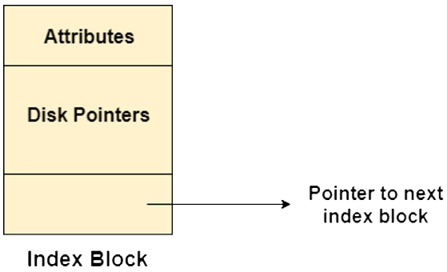

Welcome to Index Allocation
Indexed Allocation is a method of managing file storage on a disk. In this system, an index block contains pointers to the actual data blocks of a file, allowing efficient access and organization of data.
Structure of Indexed Allocation
Here is the structure of indexed allocation. In this method, an index block contains pointers to all the data blocks of a file. For example, index block 19 holds references to the actual data blocks such as blocks 2, 10, 11, 24, 25, 26, and 27 for the file "jeep." The index block allows efficient access to file data, while the data blocks store the actual file content. This structure ensures that the system can quickly locate and read the data by referencing the index block.
Three Mechanisms for Index Block
We have three different mechanisms for Index Block. Linked scheme, Multilevel Index, and Combined Scheme.
Linked Scheme

In the linked scheme, each index block serves as an individual storage unit. For large files, multiple index blocks are interconnected to manage the data efficiently. In the image on the right, taken from our game, the blue block represents an index block, while the green blocks are the data blocks. Notice how the data blocks are connected to the index block, illustrating the concept of linked indexing.
Linked Scheme
Advantages
- Simplicity: The linked scheme is straightforward to implement. Each block contains a pointer to the next block, forming a linked list.
- Efficient Sequential Access: Good for sequential file access since it follows the natural order of data storage.
- Dynamic File Size: Files can grow and shrink dynamically, and there is no need to pre-allocate contiguous storage space
Disadvantages
- Random Access Inefficiency: Random access is slow because it requires traversing the linked list from the beginning.
- Overhead: There is additional overhead for storing pointers in each block, reducing the actual data storage capacity.
- Reliability Issues: If a block is corrupted, it can lead to a loss of the entire file due to broken links.
Multilevel Index


This method uses a hierarchical structure, where a first-level index block points to multiple second-level index blocks, which then point to the actual file data blocks. This organization efficiently manages and accesses large files. In the image, you can observe how the second-level index blocks connect to the first-level index block in the middle. The data blocks are then linked to the second-level index blocks in the right image.
Multilevel Index
Advantages
- Improved Random Access: Provides efficient random access by using a hierarchical index structure, reducing the number of accesses needed to locate a block.
- Scalability: Can handle large files by using multiple levels of indexing.
- Efficient Disk Utilization: Reduces fragmentation and makes better use of disk space compared to linked schemes.
Disadvantages
- Complexity: More complex to implement and manage than the linked scheme.
- Index Overhead: Requires additional storage for index blocks, which can be significant for very large files.
- Access Time: Accessing a block may require multiple disk accesses to traverse the index levels.
Combined Scheme
In this approach, some index blocks directly point to data blocks, while others point to multilevel index blocks, which further reference the data blocks. This hybrid method optimizes storage and access for varying file sizes and structures. You can also see an example of a single direct data block from our game in the image on the right. This scheme combines with the previous two methods for an optimized approach.
Combined Scheme
Advantages
- Balanced Performance: Combines the benefits of both linked and indexed schemes, providing a balance between sequential and random access performance.
- Reduced Fragmentation: Helps in reducing external fragmentation by allowing non-contiguous storage.
- Flexibility: Can handle both small and large files efficiently by using an index for direct access and linked blocks for overflow.
Disadvantages
- Increased Complexity: More complex to implement and maintain compared to simpler schemes.
- Overhead: Additional overhead for both index storage and pointers in linked blocks.
- Management Challenges: More challenging to manage, especially in terms of keeping the index and links consistent and handling errors.
Let's Play the Game
You can now try the game and test your knowledge of index allocation. We've removed the arrows to make it more challenging. If you need assistance, feel free to use the hint button for guidance. Good luck!